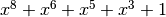
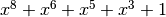

Camellia¶
Description¶
Camellia is a symmetric key block cipher with a block size of 128 bits and key sizes of 128, 192 and 256 bits. It was jointly developed by Mitsubishi and NTT of Japan. The cipher has been approved for use by the ISO/IEC, the European Union’s NESSIE project and the Japanese CRYPTREC project. It has four 8x8 S-boxes called S1, S2, S3, S4.
Summary¶
| S-box | size | NL | LD | DEG | AI | MAXAC |  |
LP | DP |
|---|---|---|---|---|---|---|---|---|---|
| S1 | 8x8 | 112 | 56 | 7 | 4 | 32 | 133120 | 0.015625 | 0.015625 |
| S2 | 8x8 | 112 | 56 | 7 | 4 | 32 | 133120 | 0.015625 | 0.015625 |
| S3 | 8x8 | 112 | 56 | 7 | 4 | 32 | 133120 | 0.015625 | 0.015625 |
| S4 | 8x8 | 112 | 56 | 7 | 4 | 32 | 133120 | 0.015625 | 0.015625 |
S1¶
Representations¶
Polynomial function over  with irreducible polynomial : Trace representation
with irreducible polynomial : Trace representation
Polynomial representation in ANF
Walsh Spectrum representation (except first row and column):

Other useful information in cryptanalysis¶
Cycle structure:
| Cycle length | Number of cycles |
|---|---|
| 2 | 1 |
| 5 | 1 |
| 249 | 1 |
There are no linear structures
It has no fixed points. It has no negated fixed points
S2¶
Representations¶
Polynomial function over with irreducible polynomial : Trace representation
Polynomial representation in ANF

Other useful information in cryptanalysis¶
Cycle structure:
| Cycle length | Number of cycles |
|---|---|
| 10 | 1 |
| 13 | 1 |
| 51 | 1 |
| 71 | 1 |
| 111 | 1 |
There are no linear structures
It has no fixed points.
It has 3 negated fixed points: (0,1,0,1,1,1,0,0), (1,0,1,1,0,0,1,1), (1,1,1,1,1,1,1,0)
S3¶
Representations¶
Polynomial function over with irreducible polynomial : Trace representation
Polynomial representation in ANF

Other useful information in cryptanalysis¶
Cycle structure:
| Cycle length | Number of cycles |
|---|---|
| 5 | 1 |
| 68 | 1 |
| 183 | 1 |
There are no linear structures
It has no fixed points.
It has 1 negated fixed point: (1,1,1,0,1,0,1,0)
S4¶
Representations¶
Polynomial function over with irreducible polynomial : Trace representation
Polynomial representation in ANF

Other useful information in cryptanalysis¶
Cycle structure:
| Cycle length | Number of cycles |
|---|---|
| 10 | 1 |
| 13 | 1 |
| 51 | 1 |
| 71 | 1 |
| 111 | 1 |
There are no linear structures
It has no fixed points.
It has 3 negated fixed points: (0,0,1,0,1,1,1,0), (0,1,1,1,1,1,1,1), (1,1,0,1,1,0,0,1)